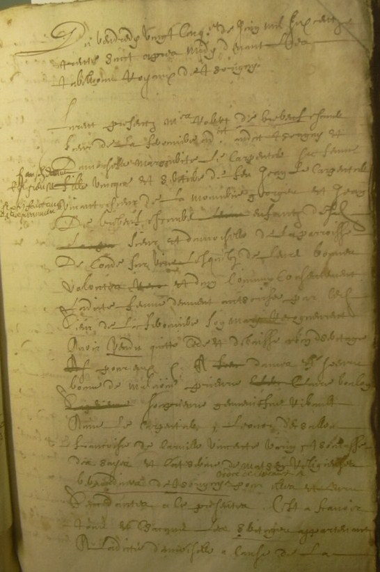
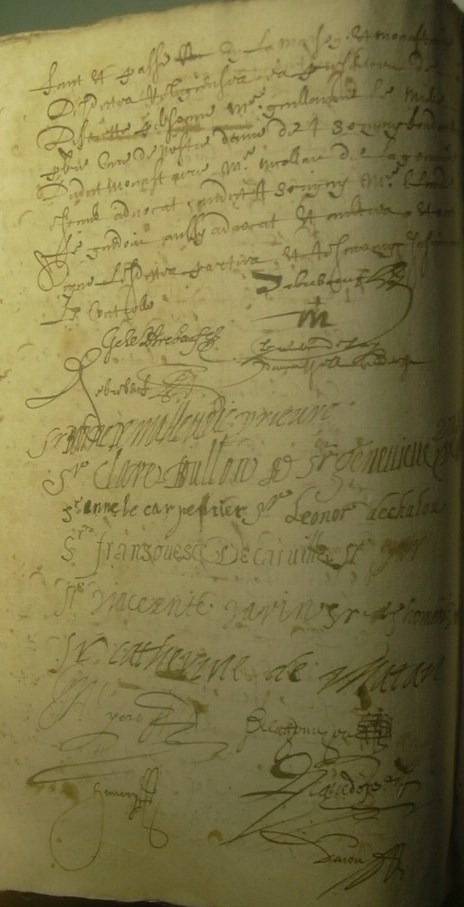

DOCUMENTS NOTARIAUX
DOCUMENTS NOTARIAUX
DOCUMENTS NOTARIAUX
DOCUMENTS NOTARIAUX
NOTARIAT DE TORIGNI
Référence : 5E 13121
Provenance : Archives Départementales de la Manche,
via Jean-Pierre Guilloux
Le 1er janvier 1624, noble homme Pierre
de la Broise sieur de Carville de la paroisse de Brectouville oncle
maternel de la demoiselle fille et héritière de feu de Parfouru
sieur de Pierrefite et du Poirier ayant été averti de la recherche que
noble homme Georges de Brébeuf sur la dite demoiselle pour la marier
avec Joachim de Brébeuf son fils aîné...
Référence : 5E13139
Provenance : Archives Départementales de la Manche
Du mercredy vingt & un jour d'avril
app[res] midy Lan mil [six cent] trente deux par dev[ant] les
tabell[ions] roiaux de Thor[igni]
furent presents en leurs [per]sonnes Joachim de breboeuf
escuier sieur du hamel et dam[ois]elle Marie de parfouru son espouse
heritiere de la terre de pierrefitte lesquels apres quelle a este
deubment autorisee
[...] recongneurent a[voir] vendu(?) ? et par ce p[rese]nt vendent et
livrent(?) a nicollas gueriel boullenger bourg[eois] de st lo p[rese]nt
et acceptant la couppe et future couppe & a couper du bois taillis
estant sur lad terre de pierre fitte [...] ce fait moiennant le prix et
somme de cent livres ts [...] presence de Me Pierre Jores premier
cons[eiller](?) assesseur aud thor[igni] et jean ozenne tailleur
dhabits de la parr[oisse] de
tresgots ? en la maison du sieur de breboeuf assise a conde sur vire
Signatures de M. de Parfouru, J. de Brebeuf, N. Gueriel, Jores, marque de Jean Ozenne (3 cercles accolés)
Référence : 5E13150
Provenance : Archives Départementales de la Manche, via Jean-Pierre Guilloux


Référence : 5E13170
Provenance : Archives Départementales de la Manche
le 14 novembre 1647
fut present Georges de breboeuf (s) Escuier Sieur de la barbee de la paroisse de conde sur
vire lequel [...] afin d'heirtage Me Robert
de breboeuf (s) escr adt aud thor de la submission quil aurroit prise de la descharge
?? Jean Thomas sieur de ma mar... bourgeois de St Lo [...] par contrat passe
dvt les tabell. dud St lo le quatorziesme
octobre mil six centz trente deux et fait Moiennant que Me jean de breboeuf escr aussy adat stipulant pour Me Georges
de breboeuf escuier Son fils aisné
...
Référence : 5E13226 f°72
Provenance : Archives Départementales de la Manche
Contrat de mariage du 13 mars 1684 passé le 8 mars 1671 entre Martin Lenglois, de la Bazoque, fils d'Oliver et Jeanne Flaux, avec Geneviève Aze, de Saint-Pierre-de-Semilly, fils de feu Jacques et Artur de Brébeuf.
Référence : 5E13290
Provenance : Archives Départementales de la Manche,
via Jean-Pierre Guilloux
du vingt cinq septembre de lan mil six cent soixante six
fut present Jean de breboeuf
esc[uyer] sieur du pont pour luy et faisant fort pour dam[oise]lle
Susanne Robert son espouze, a charge de luy faire ratifier le present
toutte fois et quante, lequel voulontairement recogneut avoir vendu
quitté cédé et dellaissé a Me pierre Loisel
dem[eurant] aud thor[igni] a ce present et aceptant pour luy Cest a
scavoir la sergeanterie qui fut Rob[ert](?) Vimond du nom[bre] des
sergeanteries du Conté et hautte justice de thorigny, icelle
sergeanterie nommée la sergeanterie de la bourgeoisie, telle
qu'elle a esté partagée avec la ? de lad hautte justice
entre Robert lebas pour luy et margueritte fossey sa femme &
nicollas Robert ayant epouzé Susanne fossey soeur delad
Margueritte sellon les partages faicts passé devant les
tabellions de Coustances pour le siege de tessy le neuf iesme febvrier
mil cinq cent quatre vingt six, et sellon ladveu d'icelle sergeanterie
rendu a son Monseigneur de Matignon par led nicollas Robert & lad
margueritte fossey le premier jour d'avril 16 vingt, & laquelle
sergeanterie appartient a lad demoiselle Susanne Robert a droict
d'eschange faict avec les coheritiers en la succession de feu nicollas
Robert l'un des fils dud Robert, ayant partagé avec lad
Margueritte fossey, pour par ledict sieur acquéreur jouir delad
Sergeanterie droictz, exemptions et privileges y despendants [...]
fut icelle rente faicte par le prix et somme de quatre cents livres de
prin[cip]al et un Loys dor de vin valleur unze livres [...]
Référence : 5E13297
Provenance : Archives Départementales de la Manche,
via Jean-Pierre Guilloux
Du vendredy appres midy dix neuf jour de aoust Lan mil six cents soixante et douze
fut present honorable ho[mm]e jean durand sieur de haultval bourgeois de st lo lequel Recongneut a[voir] vendu quitte cede et delaissé affin d'h[éritage] a damoiselle marye de breboeuf v[euv]e de feu marin de parfouru esc[uyer] et damoiselle Louize de Loucelles v[euv]e de feu jean de parfouru esc[uyer] mere et fille en loy demeurantes a condé sur vire a ce presentes et acceptantes pour elles et leurs heritiers c'est a Scavoir une portion de terre Labourable ? troys vergees ou viron nommée le clos du meslier scis en lad parr de Condé village de la petittiere ? dautant que le led sieur vendeur ? ? acquet de Guill le Rebourg et Claire sa femme par contrat passe devant les tabell de st lo le huit ? lan Mil six cent soixante Six Laquelle portion faict butz et costes jean de brebeouf esc sieur dupont led sieur vendeur et les heritiers dud Jean de parfouru esc Jean james ayant espouzé jeanne durand ? soeur de lad claire [...]
signatures de Jean Durand et Louise de Loucelles,
marque de Marie de Brébeuf"
Référence : 5E13430
Provenance : Archives Départementales de la Manche,
via Jean-Pierre Guilloux
Contrat de mariage du 28/07/1654 entre François Aze fils Jean et Geneviève de Brébeuf de
Saint-Pierre-de-Semilly avec Marguerite Buot fille de Richard et
Jacqueline de Saint Laurent de Saint-Ebremond (la Barre-de-Semilly).
Référence : 5E13475
Provenance : Archives Départementales de la Manche,
via Jean-Pierre Guilloux
Référence : 5E13819
Provenance : Archives Départementales de la Manche,
via Jean-Pierre Guilloux
Ce sont trois lots et partages d'heritages maisons et mesnages rentes et revenus [faits] par lenault à dam[oise]lle anne de parfouru f[emm]e civillement separrée de biens d'avec Jean du fayel esc[uye]r Jean ouzouf ayant espouse dam[oise]lle Jeanne de parfouru et pierre Langlois ayant espouze dam[oise]lle Suzanne de parfouru toutes filles et heritieres de deffunt Jean de parfouru vivant esc[uye]r Sr de la petitière et de deffunte dam[oise]lle Marie de brebeuf v[euv]e de deffunct Marin de parfouru Mere grande desd dam[oise]lles a eux subrodes et escheux desd successions ainsy que ceux a eux a partenant par aquest ou de ? de dam[oise]lle Louise de Loucelles v[euv]e dud feu Sr de la petitiere leur mere Iceux lots faits par led pierre Langlois co[mm]e puisne pour en estre choisy? lun par lad dam[oise]lle du fayel et Lautre par led ozouf co[mm]e aisnés et lautre demeure par non choix aud Langlois co[mm]e il en suit
Qui aura le premier lot il aura la maison manable avec le petit cellier du boult et par le mur qui fait separation de Lestable du second lot qui demeure mitoien entre eux et aux charges de le faire parachever a fraicts(?) communs restant(?) que le p[rese]nt lot soufrira que lon prendra de la pierre dans sa carriere pour le parachev[eme]nt avec la cour du bout et devant icelle maison et une portion de jardin dans le jardin de devant parti de long contre le chemin tendant du vilage de la petitière a la Carbonniere contenant ensemblement une vergée
et douze quatre perches ou viron faisant buts et costes led chemin du vilage les second et dernier lots et Gieffroy Leguedoys et naura lad maison aucune sortie par derriere icelle contre le second lot fors servitude de son tour d'échelle seullement Item il aura deux pieces de terre labourable sentretenant ensemble la premiere nommee la petitte Crette contenant quatre vergees quatre perches ou viron comrins la haye dentre le long champs du second lot quy demeure en la presente piece et lautre la tremblee contenant six vergees et demyes ? ? ou viron comprins les hayes dentre led Long Champs du second lot qui demeure ausy en la presente piece et celle de dessus les pieces(?) ausy avec unze a douze perches de terre au Costil ? ?
pieces par dans le pray du second lot au droict des deux ? led Long Champs et led prey et ce par les ? ? ? lad portion d'un fossé ? ? ? [...]
plus il aura deux vergees de terre ou viron en pray tant dans le grand pray que dans les petites pieces [...] de plus ced lot aura quatorze livres cinq sols ? ? ? a avoir et prendre sur thomas yzabel ? et payera ou raquitera unze sols en rentes du nombre de la partie de sept livres dix sols deubs par lesd lotageants a Jacques Godey et sera tenu led lot de faire la moitié d'un fossé ou plantin pour separer son jardin davec celuy du dernier lot le passage par ? ? pour aller et venir dans led chemin du village de la petitiere ? ? ? faisant aussy payera et acquitera la poulle suite(?) de rentes ? ? ? sept sols a la sieurye dargency sous la masure de la ?
Qui aura le second lot il aura la maison de la boulangerie et lestable au boult du cellier du premier lot et par le mur qui en faict separation a charge de la parachever co[mm]e il est dit au premier lot avec une portion du jardin nommé le petit jardin a prendre de la droite ligne de la costiere de derriere la maison du premier lot a aller a sa ? de la petitte Crette et le petit jardin herbier du gable de lad estable contenant tout ensemblement une vergee trois quartiers quattre perches ou vironcomprins les ahyes d'alentours qui font buts et costes les premier & second lots la piece du Long Champs du p[rese]nt lot et led chemin du vilage de la petitière naura lad estable aucune sortie par devers led premier lot et aura la porte de devers luy rebouchee mais son tour deschelle quand besoin sera seullement fait et aura une piece de terre labourable nommée le Clos du Mellier Le Long champs et la Fosse contenant ? vergee quinze perches ou viron comprins les ahyes qui en despendent ? [faisant] buts et costes le premier lot Jean de brebeuf esc[uye]r Sr du pont led ch[emin] du vilage et p[rese]nt lot Item il aura deux vergees de terre ou viron ? pray ou hault du grand pray nomme le pray Guerard comprins la haye ? plantin qui en despend [...] et led lot aura quinze livres et une poulle de rente
a avoir et prendre sur Joachim Clement ? ? ? ? quarante sols ausy de rente fonciere sur pierre Juin cinquante sols ausy de rente fonciere a a prendre sur pierre Juin de st lo [...]
Qui aura le troisieme et dernier lot il aura la maison de la grange et cellier du bout avec la portion de cour et jardin de devant et derriere icelle et le jardin herbier du bout d'iceluy ? ?contenant ensemblement une vergee et demye quatre perches ou viron et ce en part les mers(?) y apposees plus il aura deux pieces de terre labourable sentretenant ensemble la premyere contre le jardin nommee la grande Crette contenant cinq vergees trois perches ou viron et Lautre le Costil Gullet(?) contenant six vergees trois perches ou viron comprins en ses deux pieces les hayes dentre la petitte Crette et la tremblee(?) du premier lot [...] Item led lot aura quatorze livres a avoir et prendre sur Jacques flaust [...] ce jourdhuy seize juillet 16
quatre vingt dix [...]
du dimanche trente jour de juillet 1690
[se] sont presenttee devant nous les personnes de damoiselle aulne de parfouru femme civillement separee quand aux biens davec Jean du fayel escuier par sentence donnee a Sainct lo le cinq jour de decembre 16 quatre vingt six [...] et jean ossouf ayant espouzé dam[oise]lle jeanne de parfouru pierre lenglois ayant espouzé dam[oise]lle Susanne de parfouru [...] lad dam[oise]lle aulne de parfouru au droict daisné a pris et choissy le second lot lot Ledic ossouf pour luy et ? ? a pris et choissy le dernier lot et partant le premier lot est demeure par non choyx audict Lenglois pour luy et sad femme [...] faict recogneu et choissy en lestudde en la parroisse de Sainct Jean des baisants en la presence de Richard et Louys de Sainct Laurent pere et fils dud St Jean tesmoings [...]
Marques de Aulne, Suzanne, Jeanne de Parfouru, signatures Lenglois, Osouf, de Saint Laurent
Référence : 5E13820
Provenance : Archives Départementales de la Manche,
via Jean-Pierre Guilloux
Soussigné antoine de brebeuf escuyer sr de la faverie tant en son nom que co[mm]e tuteur des enfans mineurs de feu george de brebeuf escuyer
sr de vaux son frere de la succession duquel ils ont renoncé et
fils et heritier de dame marie de parfouru fille et heritiere de feu
guillaume de parfouru escuyer sr de pierrefitte et du poerier et de
demoiselle marie vaultier
ses pere et mere qui reconnaist avoir baille a titre de ferme pour le
temps de cinq ans a commencer au jour st michel prochain venant et
finir a pareil jour au bout des dis cinq ans plus[ieur]s pieces de
terre a paistre et labourer dependant du lieu nommé Soullebot a
luy apartenant aux qualitées cy dessus savoir a Sanson Legrand
de la paroisse de condé sur vire une piece nommée le camp
houel par prix et so[mm]e de dix(?) livres payables aux fermes ? de st
michel ensuivant a Jean Briard et michel et jean Marquier pere et fils
une autre piece nommée aussy le camp houel au septentrion de
l'autre camp houel par prix et so[mm]e de dix livres payables aux
termes que dessus et co[mm]e dessus a chagre de soufrir passage aux
fermiers des heritages a charue et charette proche la hay de l'autre
camp houel cy dessus declaré ? jouissant deladitte piece obliges
solidairement, a george michel les trois pieces dont jouit de present
pierre briard par prix de vingt neuf livres payables aux termes que
dessus et co[mm]e dessus sur lesquels fermages cy dessus ledit sr
bailleur en a receu la so[mm]e de
quarante neuf livres par avance lesquels preneurs se sont
obligés boueser(?) et ettouper leurs hays et fosses et encas de
coupe y laisser et reparer sans pouvoir emonder que ce qui a coustume
de lestre [...]
fait le vingt juillet mille six cent quatre vingt douze presence de george et jean capelle de la paroisse de la Manselliere
signatures de A. de Brebeuf, G. Michel, J. et G. Capelle, marques de Samson Legrand, Jean Briard
Jay soussigné michel surreville [de la pa]roisse de Ste croix
lequel apres avoir eu lecture du contenu des baus en Lautre part et des
clauses et conditions portés par iceux recognoist avoir pris a
ferme le restant des heritages de la dite terre de dessouslebos selon
icelles pactions de antoine de brebeuf escuyer sr de la faverie pour luy payer annuellement la somme
de cent vingt livres [...]
fait ce vingt deux juillet mille six cent quatre vingt douze [...] fait
en presence de george michel de conde sur vire et de pierre dela ville
de Ste susanne
signatures de G. Michel, P. Delaville et marque de Michel Surville
Du mardy avant midy vingt et un Jour d'octobre 16 quatre vingt douze furent presents lesd anthoine de brebeuf esc[uye]r
sieur de la faverie de la pa[roisse] de St exupere de bayeux estant de
present en ce lieu de Conde sur Vire, Sanson Legrand, Jean
Briard, michel et Jean marquier pere et fils et george michel de la
par[oisse] de conde sur et michel Surville de la par[oisse] de Ste
Croix de St Lo Lesquels Instances les uns des autres ont respectivement
recogneu leurs faits et signes apposés cy devant en dabte
sousigné des vingt et vingt deux juillet dernier en forme de
baux fait auxd Legrand et autres par led sieur de brebeuf [...]
fait et recongneu en lad par[oisse] de Condé au moulin de
Cotigny presence de george le Cervot de la par[oisse] de Ste Suzanne et
george Le Lorrier de la par[oisse] de
Condé [...]
Marques de Jean Briard, Sanson Legrand, Michel Surville, signatures de Georges Michel, Georges Leservot, A. de Brébeuf, M. et J. Marquier, G. Lelorier
Référence : 5E13821
Provenance : Archives Départementales de la Manche,
via Jean-Pierre Guilloux
Le 07/09/1695, Partages faits par Maître Jean Baptiste Robert sieur de la Valette puiné à Maître Georges Robert sieur du Mesnil avocat à Torigni et à Georges François Robert sieur de Préfontaine son ainé des maisons et héritages pour la succession de feu Gilles Robert et de Colette Yvrande père et mère grands des dits Robert ainsi que d'Etienne Robert sieur du Mesnil leur oncle, Eustache Robert et Dlle Madeleine de Brébeuf père et mère des dit partageants
Référence : 5E13821
Provenance : Archives Départementales de la Manche,
via Jean-Pierre Guilloux
Le 24/05/1695, Dlle Suzanne Robert veuve de Jean de Brebeuf sieur du Pont seigneur et patron de Condé, Julien de Brebeuf écuyer sieur de Condé, François de Brebeuf chanoine en la cathédrale d'Avranches, Jean François de Brebeuf sieur du Boscq et René de Brebeuf sieur de Villeneuve leurs enfants
Référence : 5E13825
Provenance : Archives Départementales de la Manche,
via Jean-Pierre Guilloux
Du mardy quinze iesme jour
de janvier mil six cent quatre vingt dix sept par devant les notaires
garde nottes royaux soubs signes en la vicomte de thorigny pour le
siege et parroisse de Rouxeville et aultres y jouintes et despendantes
Sont
devant nous comparus les personnes de Joachin de parfouru esc Sieur du
Val Ravend et thomas de Varot escuiers Ravend de parfouru esc sr du
Mesnil grimot Jacques de chantelou esc sr de la Vaussiere nicolas et
anonisme de loucelles escuiers estienne thibout esr sieur du flaguay
Jean et guill[aume] de loucelles escuiers andré Merlet esc et Jullien
Moisson escr St de St Jullien parents paternels et maternels de Ravend
de
parfouru Ecuyer fils Mineur de Jean de parfouru Ecuyer Sr darganchy et
de damoiselle Catherine Jouachime de la gonniviere Son epouse assemblée
instance dud Sr darganchy son pere et tuteur naturel pour deliberer sur
la remontrance quil leur auroit faite que Charles de breboeuf Ecuyer Sr
de Pierrefitte parent du trois au quatr[iem]e degre est decedé et que
la succession a esté abandonnée et renonsée par Jullien de
brebeouf
Ecuyer Sieur de la faverie georges de breboeuf Ecuyer Sr de Vaux ses
freres quoy que se pendant il y ente en icelle plusieurs biens tant
meubles que immeubles que argent et effet mobiliers lesquels
ont
esté derobes substrais et divertis ainsy que tous les tiltres et
papiers consernant la proprieté des biens dont il sera fasille de faire
la preuve pour obliger les coupables non seullement de rendre la
succession indamne mais encas ? authorise lheritiers a Lenonce par la
premiere instance auquel il sera receu lors demandant led sieur
darganchy que ? ayda a lad donne advis sy il doit pour et au non desd
fils accepter la succession dud sr de pierre fitte et poursuivre en sad
qualite de tuteur tout ceux qui auroient pris enporté soustray diverty
et derobé tous les maubles argent effaits mobilliers lettres
obliga[ti]ons et ecritures de lad succession lesdits sieurs parents
Surquoy deliberant apres avoir veu que lad succession dud sr de pierre
fitte ne peu estre que aventageuse aud mineur puisque ceux qui ont
diverty soustray et derobé lesd meubles et effaits mobilliers et
papiers ne se peuvent dispenser de la rendre indamne ils ont authorise
led sr darganchy à accepter ladite succession et nommé en qualité de
tuteur de son dit fils ensemble pour estre permis de publiers monitoire
et de faire informer contre tous ceux qui auroit apellé lad succession
et lad poursuire jusques en jugement deffinitif et a cette fin tous les
frais quil fera a cette occasion luy seront alloués sur ses
comptes [...]
fait
et delibere led jour et an p[rese]nce de Richard bertrand de condé sur
vire et antherne(?) Savarre de st j[ean] des baisants tesmoins
Signatures
De parfouru, R de Varroc, Th de varroc, Thibout, Merlet, de Parfouru,
Chantelou, Nicolas de Loucelles, Anonimme de Loucelles, De Loucelle, de
Loucelle, Savare, Moisson, de parfouru, Bertrand, Le Haguais
Référence
: 5E2518
Provenance
: Archives Départementales de la Manche, via Jean-Pierre Guilloux
A tous ceux qui ces Lettres
verront le garde du sceau des obliga[ti]ons de la viconté de Coustan[ces]
Salut Scavoir faisons que par dev[an]t nous charles hecquard not[ai]re
garde notte royal en la viconté commis par sa majesté au siege
de Saint denis le gast, viconté de gravray pnce de gabriel de
Beaucourt not[ai]re en la parr de guehebert furent p[rese]nts en leur
perso[nn]e Jean de brebeuf Esc[uye]r Sr de la vallette
et dam[oise]lle Catherine
foucher Lesq[ue]ls a l'Instance les uns des au[tres] volontairem[en]t
Recongneurent Leurs faits et signe apposes au traité de
Mariage fait entre eux duquel la teneur ensuit, En Traitant
le mariage esperé estre fait selon la constitu[ti]on de l'eglize
catholique apostolique et romainne entre Jean de brebeuf
Esc[uye]r Sr de la vallette originaire de la parr de Conde sur Vire
demeurant en la parr de St Laurent de Thorigny d'une part
Et dam[oise]lle Catherine foucher v[euv]e de Me gabriel auvray viv[ant] cons[eiller]
du Roy viconté de gravray d'autre
[...]
pnce de Me Messire
jacques de Monts Escr sr de boismont con[seille]r du Roy lieu[tenant] general
au bailli[age] et Siege p[residi]al de Costentin, discrepte pero[nn]e Me Jean
foubert docteur en theologie, curé et official de Villedieu
Louis de gascoing Esc[uye]r ? venerable et discrepte perso[nn]e
Me Nicollas de brebeuf pbre prieur de venoix Jouachim
de brebeuf Escr Sr de Valencon, gille de brebeuf
Escr sr
des Vages, bernardin de brebeuf Escr sr de la feronniere,
george
de brebeuf Escr sr de gosseville, Me george robert sr du mesn[il]
Me Jean Robert Auvray sr de la Chaslonniere Me thomas
Auvray ad[voc]at au baill[iage] de Costentin a Coustan[ces] Jean gohier Escr
sr de precaire, francois Auvray sr de Servigny, gedeon Auvray
Sr de la Villerye, Jacques Auvray sr de la bergerye et de dam[oise]lle
Marye auvray Espouze du sr de precaire, ce unze Jour
de Juillet 16 quatre vingt deux signez de brebeuf Catherine
foucher brebeuf brebeuf brebeuf brebeuf auvray auvray
auvray gohier Marie auvray et foubert avec leurs
signes et paraphes signe fort Lesd sr de Montz
et de la Chaslonniere consentant que led traite soit
executé en tout son contenu suiv[ant] sa forme et teneur
faisant Laq[ue]lle recongnoissance Lad dam[oise]lle a dit estre Saisie
des meubles mentionnés au partage dentre elle et les
? ses enfants
[...]
ce fut fait et recongneu en la
aison de lad dam[oise]lle village de la deucterye(?) parroise du
Mesnil amand Le dimanche douze jour de juillet 16
quattre ving deux apres midy aux pnces dud Sr
couré de villedieu et de Nicollas asseline de la parr
du Mesnil garnier tesmoings qui ont signe avec lesd
partyes a la Minutte demeuree aud hecquard
[à propos de la séparation de biens entre l'époux et l'épouse]
Référence
: 5E4945
Provenance
: Archives Départementales de la Manche, via Jean-Pierre Guilloux
Le 4 juin 1715, François Bernard, écuyer sieur de Saint Martin ayant épousé Dlle Eleonore de Brébeuf domicilié à Ver, acte qui parle d'un autre acte fait entre Joachim de Brébeuf, sieur de Ballençon père de la dite Demoiselle et Françoise Leguerrier veuve de Leonard Lecourvoisier fait devant Pierre Larose et Jacques Vautier notaire à Saint-Lô le 5 octobre 1677.
NOTARIAT DE SAINT-AUBIN-DE-TERREGATE
Référence
: 5E9823
Provenance
: Archives Départementales de la Manche, via Amaury du Rosel
le 11 janvier 1729, contrat de mariage
catholique entre Noël du Pontavice, écuyer, seigneur de
Préaux fils de François, écuyer et de Jeanne de
Taillefer de Saint-Seunier-de-Beuvron d’une part, et
Philberte Jeanne Marguerite du Homme fille de Pierre, écuyer, seigneur de Chassilly et de Françoise de Bréboeuf.
La dot est de 2500 livres dont 100 livres de rente pour 2000 livres,
dont 50 livres de rente à prendre sur Jean-Baptiste Davy,
écuyer, seigneur de Boisdavy du fait de Jeanne Marguerite du
Homme veuve de Jean d’Auray, écuyer. Aucun témoin
notable ou de la famille.
Provenance : Archives Départementales du Calvados, via Patrick Van Nieuwkerke
le 23 février 1739, contrat de mariage entre Louis de Brébeuf, écuyer, fils de feu Robert de Brébeuf Valois et de feue Françoise Leprince, avec Marie Jeanne Fouet, veuve de Jean Chrétien, fille de feu Louis Fouet et Isabelle Perrée.
|
|
|
retour à la famille Brébeuf |